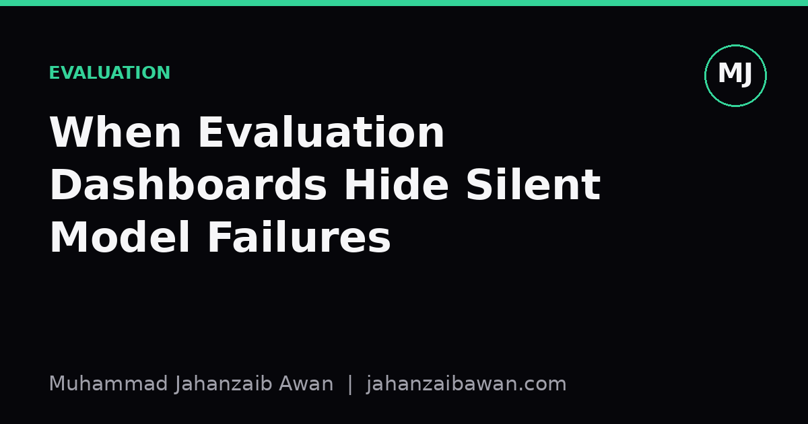

When Evaluation Dashboards Hide Silent Model Failures
Managed platforms make model metrics look tidy and trustworthy, but the summary numbers on a dashboard can quietly mask the exact failures you most need to catch.

The comfort of a green dashboard
Managed machine learning platforms have made it remarkably easy to train a model, click through to an evaluation tab, and see a tidy set of numbers: accuracy, precision, recall, maybe an AUC curve rendered in a pleasant colour scheme. It feels rigorous. There is a number, it is above some threshold, and the platform seems to be vouching for the model on your behalf. I think this is precisely where things start to go wrong, not because the numbers are false, but because they answer a narrower question than the one we actually care about.
A dashboard metric is usually computed on a held-out split that the platform created for you, often with a default random shuffle. That default is doing a lot of quiet work. If your data has any structure across time, users, or groups, a random split can leak information from the training set into the test set without anyone writing a single line of leaky code. The dashboard cannot tell you this happened. It will simply report a confident, plausible-looking number, because from its narrow point of view, nothing went wrong.
This matters because the whole point of an evaluation number is to act as a proxy for how the model will behave once it is making decisions that affect real people or real money. When the proxy is quietly broken, the gap between what the dashboard says and what actually happens in production does not show up until later, often after the model has already been shipped and trusted.
A worked example of a leak nobody sees
Suppose you are building a model to predict whether a customer will cancel a subscription within the next month, using a managed platform that automatically splits your historical data eighty-twenty into train and test sets. The platform reports ninety-two per cent accuracy and an AUC of 0.89. Those numbers look good, and the dashboard highlights them in green.
Now suppose that your dataset contains multiple rows per customer, one for each month of their subscription history, and several customers appear in both the training rows and the test rows because the split was done at the row level rather than the customer level. The model has effectively seen part of each test customer's behaviour during training. It has learned customer-specific quirks rather than generalisable patterns of churn. The reported 0.89 AUC reflects the model's ability to recognise customers it has partially already met, not its ability to predict churn for a genuinely new customer next month.
If you instead split by customer, ensuring every row for a given customer sits entirely in either the training set or the test set, the same model might score an AUC closer to 0.74. That thirteen or fourteen point drop is not noise; it is the difference between an inflated number produced by leakage and a realistic estimate of production performance. A managed dashboard that defaults to a random split will show you the 0.89 and never mention that a customer-level split exists as an option, let alone that it would tell a very different story.
The uncomfortable part is that both numbers are technically correct given the split each one used. The dashboard is not lying. It is simply answering the wrong question extremely confidently, and confidence is exactly what makes a wrong answer dangerous.

Aggregate metrics smooth over the failures that matter
Even when the split is sound, a single aggregate number tends to average away the failures that matter most. Imagine a model for approving small loans that achieves eighty-eight per cent overall accuracy on a well-constructed test set. That headline figure might be hiding the fact that accuracy on applicants under twenty-five years old is only seventy-one per cent, because that group is underrepresented in the historical data and behaves somewhat differently. A dashboard built to show one clean top-line metric per model has no natural place to surface that gap unless someone deliberately asks for a breakdown by subgroup.
The same smoothing effect happens over time. A model deployed today might perform well on this week's incoming data, but as the underlying population shifts, whether due to seasonality, a marketing campaign, or a change in a competitor's pricing, performance on new slices of data can degrade well before the rolling average metric shown on a monitoring dashboard dips noticeably. Averages are slow to react by construction, which is useful for reducing noise but terrible for early detection of a genuine problem.
There is also a subtler issue with calibration. A model can maintain a stable AUC while its predicted probabilities drift away from being trustworthy estimates of real-world likelihood. A dashboard fixated on ranking metrics like AUC or ROC curves will not flag this, yet calibration matters enormously if downstream decisions, such as setting a lending threshold or an alert cut-off, depend on the actual probability value rather than just the relative ranking of predictions.
What to actually do about it
None of this means managed platforms are untrustworthy or should be avoided. It means the dashboard should be treated as a starting point for questions, not a final verdict. Before trusting a headline metric, I ask how the train and test split was constructed, whether it respects natural groupings like customer, time, or session, and whether a leakage-aware alternative split changes the result meaningfully. If it does, that gap is more informative than the original number.
Alongside the aggregate score, it is worth deliberately computing performance on the slices you actually care about: by demographic group, by time period, by data source, or by any dimension where uneven performance would cause real harm or real cost. This usually takes a modest amount of extra query work, and it is almost always worth doing before a model goes live rather than after a complaint arrives.
Finally, keep a simple, transparent baseline alongside the sophisticated model, something like a majority class predictor or a basic logistic regression, and track both on the same slices. If the managed platform's fancy model only narrowly beats the honest baseline on the segments that matter, that tells you far more than any single accuracy figure ever could. A dashboard can show you a number; it cannot tell you whether that number was ever the right question to ask.